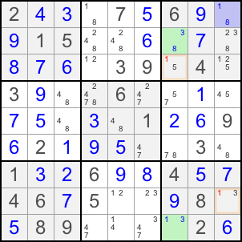

返回课程目录
寻找三个双候选格，候选分别为 XZ、XY、YZ。第一个格子与第二个格子互相可见，第二个格子与第三个格子互相可见。随后找到同时看见第一个和第三个格子、且含候选 Z 的其他格子。
如果第一个格子是 Z，目标格不能是 Z；如果它是 X，则第二格为 Y、第三格为 Z，目标格同样不能是 Z。
下图中，R1C9、R2C7、R9C7 构成 XY-Wing ，其中 X=8、Y=3、Z=1。无论哪种情况，都可从 R3C7 和 R8C9 删除 1。

也可将 XY-Wing 视为最简单的ALS情形：R1C9 是一个双候选单格 ALS；R2C7 与 R9C7 组成另一个 ALS。8 是受限共同候选，1 是可以从同时看见两端的格子中删除的共同候选。
返回课程目录